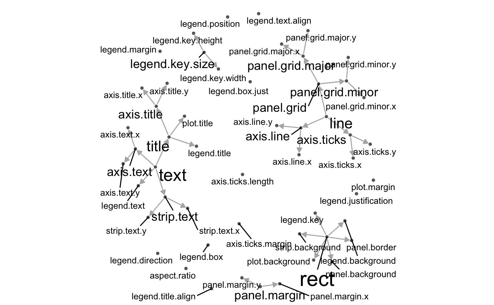
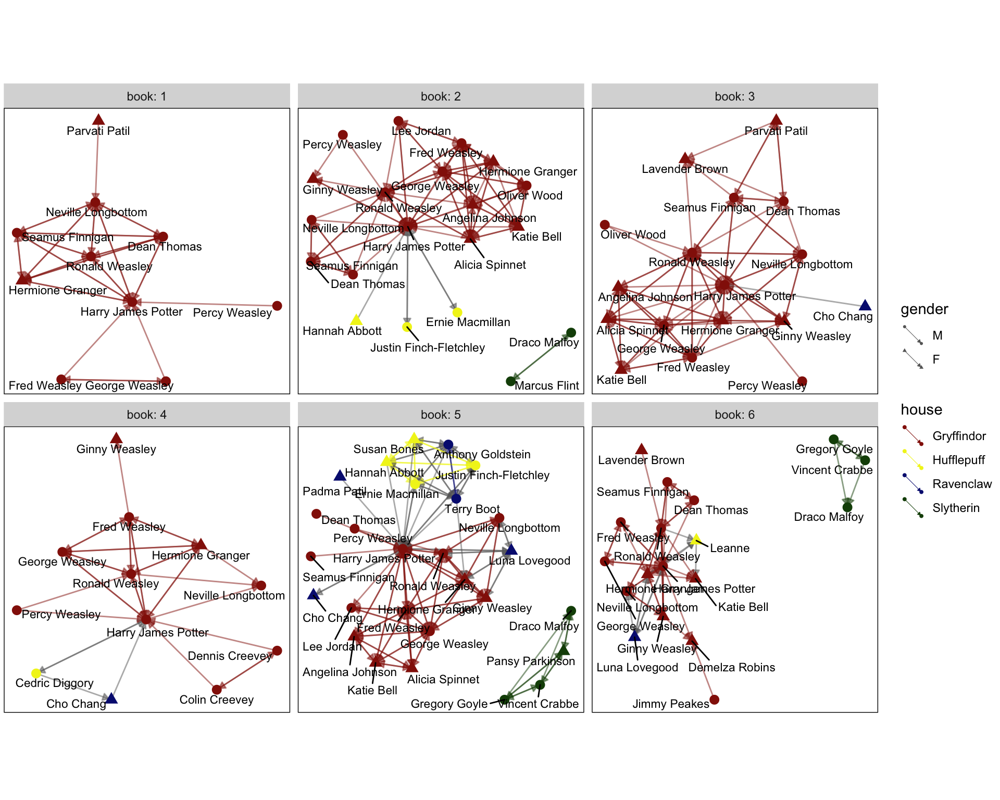

geomnet is a package built on top of the most recent major ggplot2 release. It provides a ggplot2 geom called geom_net to visualize graphs and networks. It also include the function stat_net to calculate network layouts with the sna package. Finally, the function geom_circle is included to draw circles using ggplot2.
You can install geomnet directly from CRAN install.packages('geomnet') or from Github devtools::install_github("sctyner/geomnet")
ggplot2 Theme Elements
This example shows the theme inheritance properties of the theme elements of ggplot2. Note: this example has not been updated since the release of ggplot2 2.2.0 and as such the content may have changed.
library(dplyr)
library(geomnet)
data(theme_elements)
# data step
TEnet <- fortify(as.edgedf(theme_elements$edges[,c("parent", "child")]), theme_elements$vertices)
# create a degree variable for use later
TEnet <- TEnet %>%
group_by(from_id) %>%
mutate(degree = sqrt(10 * n() + 1))
# plot
ggplot(data = TEnet,
aes(from_id = from_id, to_id = to_id)) +
geom_net(layout.alg = "fruchtermanreingold",
aes(fontsize = degree), directed = TRUE,
labelon = TRUE, size = 1, labelcolour = 'black',
ecolour = "grey70", arrowsize = 0.5,
linewidth = 0.5, repel = TRUE) +
theme_net() +
xlim(c(-0.05, 1.05))
Blood Donation Diagram
In this example, we reimagine the traditional blood donation diagram as a directed network. Arrows point to the blood type that receives. This example provides two data frames to geom_net().
library(geomnet)
data(blood)
ggplot(data = blood$edges, aes(from_id = from, to_id = to)) +
geom_net(colour = "darkred", layout.alg = "circle", labelon = TRUE,
size = 15, directed = TRUE, vjust = 0.5, labelcolour = "grey80",
arrowsize = 1.5, linewidth = 0.5, arrowgap = 0.05,
selfloops = TRUE, ecolour = "grey40") +
theme_net() 
Harry Potter Peer Support Network
In this fun example from this website, there is a tie between two students if one provides emotional support to the other at some point in the book. It is a directed network, so in the visualization, the arrow points to the student receiving support.
library(geomnet)
head(hp.edges)
#> name1 name2 book
#> 1 Dean Thomas Harry James Potter 1
#> 2 Dean Thomas Hermione Granger 1
#> 3 Dean Thomas Neville Longbottom 1
#> 4 Dean Thomas Ronald Weasley 1
#> 5 Dean Thomas Seamus Finnigan 1
#> 6 Fred Weasley George Weasley 1
head(hp.chars)
#> name schoolyear gender house
#> 1 Adrian Pucey 1989 M Slytherin
#> 2 Alicia Spinnet 1989 F Gryffindor
#> 3 Angelina Johnson 1989 F Gryffindor
#> 4 Anthony Goldstein 1991 M Ravenclaw
#> 5 Blaise Zabini 1991 M Slytherin
#> 6 C. Warrington 1989 M Slytherin
hp.all <- fortify(as.edgedf(hp.edges), hp.chars, group = "book")
#> Using name1 as the from node column and name2 as the to node column.
#> If this is not correct, rewrite dat so that the first 2 columns are from and to node, respectively.
#> Joining edge and node information by from_id and name respectively.
# only plot the characters with any connections in a given book.
ggplot(data=hp.all, aes(from_id = from, to_id = to_id)) +
geom_net(fiteach=T, directed = T, size = 3, linewidth = .5,
ealpha = .5, labelon = T, fontsize = 3, repel = T,
labelcolour = "black", arrowsize = .5, singletons = FALSE,
aes(colour = house, group = house, shape = gender)) +
scale_colour_manual(values = c("#941B08","#F1F31C",
"#071A80", "#154C07")) +
facet_wrap(~book, labeller = "label_both") +
theme_net() + theme(panel.background = element_rect(colour = 'black'))
Interactivity with plotly!
Now including interactivity with ggplotly()!
# blood donation example
library(geomnet)
# devtools::install_github("ropensci/plotly")
library(plotly)
data(blood)
bloodnet <- fortify(as.edgedf(blood$edges), blood$vertices)
p <- ggplot(data = bloodnet, aes(from_id = from_id, to_id = to_id))
# create data plot
p2 <- p + geom_net(aes(size=Predominance, colour=type, shape=rho, linetype=group_to),
linewidth=0.75, labelon =TRUE, directed = TRUE, labelcolour="black") +
facet_wrap(~Ethnicity) +
scale_colour_brewer(palette="Set2")
ggplotly(p2) %>% hide_legend()
# Classic College Football Example
data("football")
# data step: merge vertices and edges
ftnet <- fortify(as.edgedf(football$edges), football$vertices)
# create data plot
gg <- ggplot(data = ftnet,
aes(from_id = from_id, to_id = to_id)) +
geom_net(layout.alg = 'fruchtermanreingold',
aes(colour = value, group = value,
linetype = factor(same.conf != 1)),
linewidth = 0.5,
size = 5, vjust = -0.75, alpha = 0.3) +
theme_net() +
theme(legend.position = "bottom") +
scale_colour_brewer("Conference", palette = "Paired") +
guides(linetype = FALSE)
ggplotly(gg)